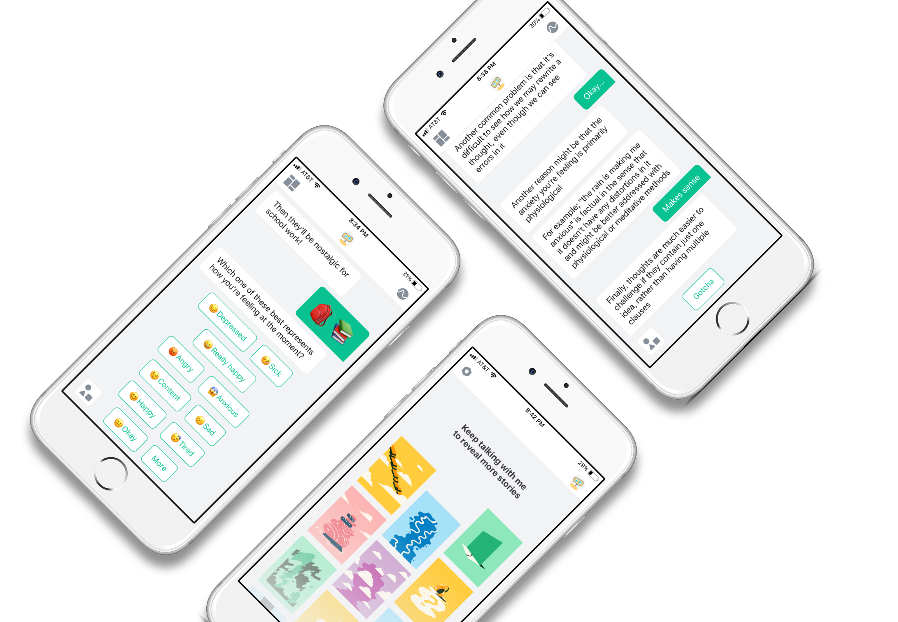

SOLUTION
A machine learning enabled chatbot that ameliorates mental health conditions.
Woebot is a personalized, artificially intelligent chatbot that combats depression and anxiety through brief daily check-ins.
Backed by AI pioneer Andrew Ng, Woebot was released in June 2017 and grew from 100 users to 50,000 users in its first week. It received $8 million in Series A funding and now receives over 2 million messages per week.



FEATURES
Daily emotion check-ins make users mindful of triggers.
Woebot checks in with users for 5-10 minutes each day. Much like a gratitude journal, these brief encounters ask users to reflect on their day and examine how they felt during key events that unfolded to uncover any emotional triggers.
GIFs and stories provide teaching moments.
Woebot frames users' mental health challenges into digestible stories that create psychological distance and give users an alternative point of view.